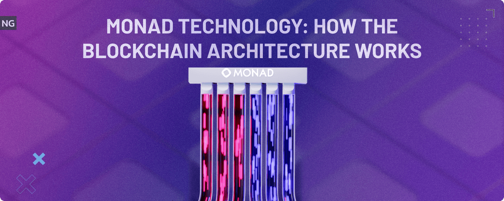

Build Without Limits
on Monad
Monad is an EVM-compatible Layer-1 blockchain engineered for 10,000+ TPS and sub-second finality — bringing Ethereum's ecosystem to the speed of a next-generation chain.
Reimagining the EVM from the Ground Up
Monad is a high-performance Layer-1 blockchain that retains full Ethereum Virtual Machine compatibility while dramatically re-engineering its core architecture. By decoupling consensus from execution, leveraging optimistic parallel transaction processing, and deploying a custom-built state database — MonadDB — Monad delivers the throughput of next-generation chains without asking developers to abandon Solidity or rebuild their toolchain. Existing Ethereum contracts deploy with zero changes, yet benefit from orders-of-magnitude higher performance, ultra-low latency, and significantly reduced infrastructure costs for node operators.
Read the Docs →
Three Pillars of Performance
Every design decision in Monad's architecture serves a single goal: maximum throughput with full EVM equivalence.
Asynchronous Execution
MonadBFT consensus and transaction execution run in parallel pipelines. Validators agree on block order while the execution engine concurrently processes prior blocks, removing the bottleneck that caps traditional EVM chains at dozens of TPS.
Optimistic Parallel EVM
Transactions execute simultaneously across multiple CPU cores. An optimistic scheduler assumes independence and resolves conflicts post-execution — achieving Solana-class parallelism without requiring developers to declare account access lists or adopt new languages.
MonadDB State Engine
A purpose-built key-value store with a native Merkle-Patricia Trie. MonadDB serves state reads and writes concurrently, reduces RAM requirements, stores state efficiently on SSD, and supports rapid node bootstrapping via snapshots.
Full EVM Compatibility
Deploy existing Solidity or Vyper contracts without modification. Hardhat, Foundry, Remix, ethers.js, and Wagmi all work seamlessly on Monad, letting teams migrate dApps to a high-performance environment in hours.
Decentralized Validator Set
MonadDB's low memory footprint means validators can run on commodity hardware, enabling a larger and more geographically distributed validator set that provides Ethereum-grade decentralization at Monad's throughput.
MonadBFT Consensus
A pipelined two-phase Byzantine Fault Tolerant protocol derived from HotStuff. It overlaps proposal, voting, and finalization for consecutive blocks, achieving ~800 ms finality and ~400–500 ms block times.
Everything You Need to Build on Monad
From setting up a local dev environment to monitoring a production validator — find resources for every stage of the journey.
Development Tools
Smart contract frameworks, SDKs, RPC endpoints, faucets, and debuggers. Everything a Monad developer needs in one place.
Browse tools →Documentation
Architecture deep-dives, API references, integration guides, and step-by-step tutorials for developers at every level.
Read docs →Block Explorer
Search transactions, inspect addresses, decode contract calls, and monitor live network statistics in real time.
Open explorer →Run a Node
Hardware requirements, installation instructions, configuration guides, and monitoring best practices for validators.
Node setup →Testnet
Connect to the Monad Testnet, claim test tokens, deploy contracts, and test your application before mainnet.
Join testnet →Mainnet
Network parameters, ecosystem projects, staking guides, and everything needed to participate in the Monad mainnet.
View mainnet →How Monad Works
In the landscape of Layer-1 blockchains, Monad has emerged with a bold proposition: delivering high throughput and low latency without forsaking the familiar Ethereum Virtual Machine. The key breakthroughs — asynchronous consensus, optimistic parallel execution, and the MonadDB state engine — work together as an integrated system rather than isolated optimizations.
Decoupling Consensus and Execution
Most traditional blockchains tightly couple the consensus process with transaction execution. In Ethereum, a proposed block's transactions must be fully executed by validators before the block can be finalized, which inherently limits throughput. Monad's MonadBFT focuses only on agreeing on the order of transactions. Execution happens asynchronously in a separate pipeline, allowing the network to finalize new blocks while prior blocks are still being processed — producing block times of ~400–500 ms with finality around 800 ms.
Optimistic Parallel Transaction Processing
Once a block's order is settled, Monad's execution engine speculatively runs all transactions in parallel across CPU cores. Each transaction's read-set and write-set are recorded. During a serial commit phase, results are validated in order: if no conflict is detected, the result is committed instantly; if a conflict is found, only that transaction is re-executed on the updated state. In practice, the vast majority of transactions touch independent state and never require re-execution, yielding near-linear throughput scaling with core count.
MonadDB: State at Scale
High TPS is only sustainable if the state database can keep pace. MonadDB is a purpose-built storage engine that embeds the Merkle-Patricia Trie natively, eliminating the overhead of Ethereum's LevelDB/RocksDB abstraction layer. It serves concurrent multi-threaded reads and writes, caches hot state in memory, and flushes cold state to SSD — all without a single-threaded bottleneck.
Developer takeaway: You write standard Solidity. You use standard tools. Monad's performance gains are entirely infrastructure-level and transparent to the application layer. Porting an existing Ethereum dApp to Monad requires changing only the RPC endpoint.